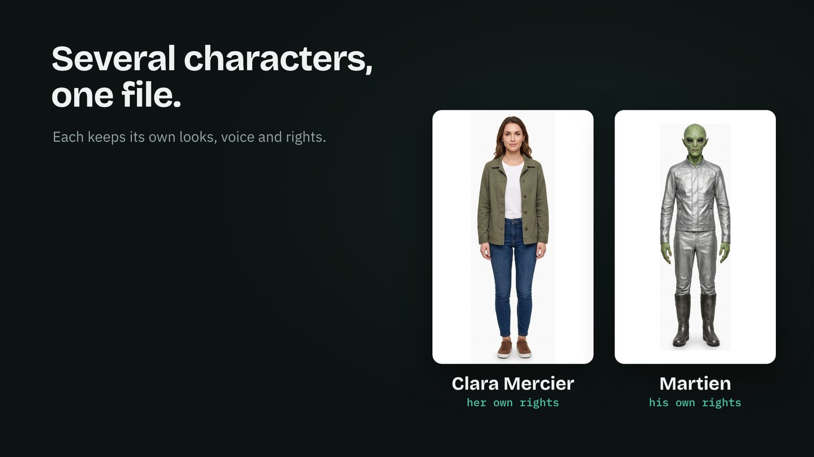

Character Open File
Complete AI characters in one open file — portable, with their rights.
Complete AI characters in one open file — portable, with their rights.
An open file format that bundles everything that defines an AI character — personality, looks, voice, 3D, motion, agent skills, memories and a psyche — with its rights and consent built in. The same file opens in a chat app, an image generator, ComfyUI, a game engine or an agent.
Now: 1.2.2, 15 November 2026 — the builder keeps everything it does not model, agent hosts in cof-cli (one memory, two homes), undated memories in the explorer (notes). Before: 1.2.1, 8 November — Character.AI import; 1.2, 8 November — a psyche; 1.1, 30 October — memories; 1.0, 17 October. Every 1.x file stays valid and readable by every 1.x tool.
What fits in the file?
COF compared, feature by feature, with Character Card V2 and V3 / .charx, agent Markdown, Letta Agent File, MacPaw Portable Memory and VRM — including what COF does not do.
Save your Character.AI bots
COF 1.2.1: your character, and your conversations as its private memories, in one open file — then looks, a voice, presets, a psyche. Everything happens in your browser.
AI characters now have an inner life
COF 1.2: a psyche you can read, edit and take with you — every conviction tied to the memory that made it.
How many convictions make a person?
What psychology has counted instead, a simulator to test your own numbers, and what the Big Five, Myers-Briggs types, the Enneagram and astrology are worth.
AI characters now have memories
COF 1.1: moments and periods of a life, what they felt, what they keep to themselves, what fades.
How much could a life weigh?
How many memories a person holds, how many bytes they would take, and a calculator to test the hypotheses.
Two short films made for 1.2.2, with real files and real tools, nothing staged.
One memory, two homes
Clara is exported to OpenClaw and answers from the memories her file carries. Told something new, the agent writes a note; cof memory add brings it back into her file as a lived, personal memory. Exported to Hermes, which had never met her, she remembers this morning's train.
Who she is
A character is more than a prompt. Her psyche — eleven kinds of nodes, each tied to the memory, person or place it comes from — explored, played through time, written in the builder, then turned into the SOUL.md an agent reads.

A ZIP archive with a manifest: the character's identity, its elements in eight categories — personality (a Character Card V3 inside, a psyche, free text), appearance, identity weights, 3D, voice, postures, motion, memories — a library of agent files, and its rights. Almost everything is optional; what goes in is checked.

A preset is a ready-to-use combination: one personality, one look, one voice, one age. Switch the language or the age, and the rest follows.

Moments and periods of a life, each with when, where, with whom, how it felt then and now, how clearly it comes back, and what the character would rather not tell. What it lives with a user is written back into the same file — and leaves with it. Read more.

Values, beliefs, wants, fears, wounds, tastes and habits as a graph of short nodes, each with a strength, a time span and the memory it comes from. People, places and objects are named once, shared by memories and psyche. Read more.

Permissions, consent when a real person is depicted, and provenance are part of the file. Every preset declares an age; nudity or intimate content with a minor makes a file invalid, not merely tagged.

A cast travels together, and each character keeps its own looks, voice, presets and rights.

Create with the builder, an AI agent or an import; use it in the explorer, ComfyUI, chat apps and agent hosts. cof validate checks ages, rights, hashes and scripts.

Builder
Drop photos, a card and a voice sample; get a .cof. Offline, in your browser.

Explorer
Open any .cof: presets, looks, voices, poses, memories, psyche, rights. Read-only.
Drop your CAI Tools or PersonaText export, check three things, download one .cof: your character, and your conversations as its memories, kept private. Then take it further than a backup — looks, a voice, presets, a psyche. Everything happens in your browser. Save your characters →
A .cof contains a valid Character Card V3 and exports to a ccv3 PNG card, a card JSON, SOUL.md / IDENTITY.md, an OpenClaw workspace and a Hermes profile; a VRM avatar inside is a plain file. Existing tools have nothing to rewrite. What fits in the file, compared →
Specification
The normative text, in English and French.
Implementing COF
Reading, writing, rights, security, conformance.
Examples
Nine conformant characters, from text only to a twelve-preset flagship.
For AI agents
The cof-author skill: an agent builds and validates a .cof.
Roadmap
Next: a player, assisted creation, a gallery of starter characters, a professional profile.
Changelog
Every release, what changed and why.